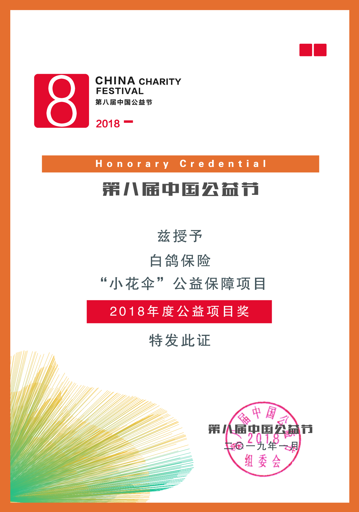

一、项目概要
白鸽保险践行保险普惠理念，以“小爱为初衷，铸大梦作蓝图”，在自身发展壮大的同时，心系社会热心慈善公益事业，积极践行企业社会责任。为贯彻落实“精准扶贫”的号召，白鸽保险积极响应由厦门市工商联(总商会)指导、厦门市科技经济促进会发起，厦门市湖里区慈善会为合作单位的“小花伞”公益保障项目，并携手中国人民财产保险股份有限公司厦门分公司作为该公益项目的承保单位。该项目聚焦城市“保险需求贫困户”的健康保障问题，以“保险扶贫”的方式，通过商业保险为他们的健康安全提供一份切实有效的保障，确实践行企业宗旨“让保险守护更多家庭”，并发动爱心企业、爱心人士和社会团体通过公益保险项目了解保险、理解保险。
二、帮扶对象
1、无法办理医社保的贫困家庭子女；
2、社区宣导员、环卫工人等社区街道工作者；
3、低保户、贫困户等需要帮扶的群体。
三、组织单位
指导单位：中国工商联（总商会）
主要发起：厦门市科技经济促进会
合作单位：厦门市湖里区慈善会
联合发起：厦门市绍兴商会、厦门市五金交电商会、厦门市塑料橡胶同业商会、厦门市定制家居产业协会、八零后高尔夫球队
协办单位：厦门市山西商会、厦门市地方金融协会
支持单位：伟合控股、德美控股、众志达股份、鲸鱼金融、厦门鸟巢阅读计划
承保单位：中国人民财产保险股份有限公司厦门分公司、白鸽宝保险经纪有限公司
四、公益产品
2款保险：白鸽专属综合意外险，白鸽专属学平险
五、项目成果
“小花伞”公益保障项目自2017年10月19日启动至今，已募集爱心保险5000多份（折合保障总额达5亿元人民币），为4000多名儿童以及1000多名街道环卫工作者完成投保，涵盖后坑社区、东安社区、安兜等村落街道；并组织开展了一系列丰富多彩的公益活动，一次次充满爱的主题，结下了一个又一个丰硕的成果。“小花伞”公益保障项目积小爱成大梦，在第八届中国公益节评选活动中，一举斩获了“2018年度公益项目奖”。

（小花伞”公益保障项目荣获“2018年度公益项目奖”）